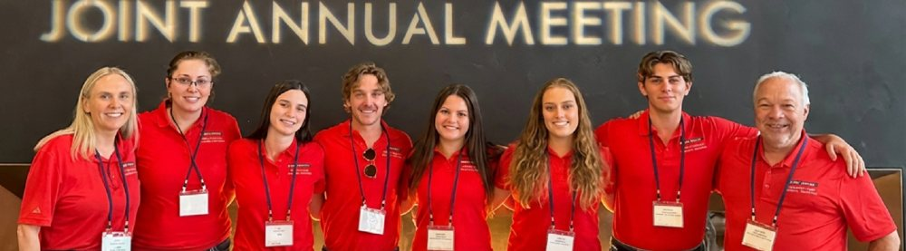
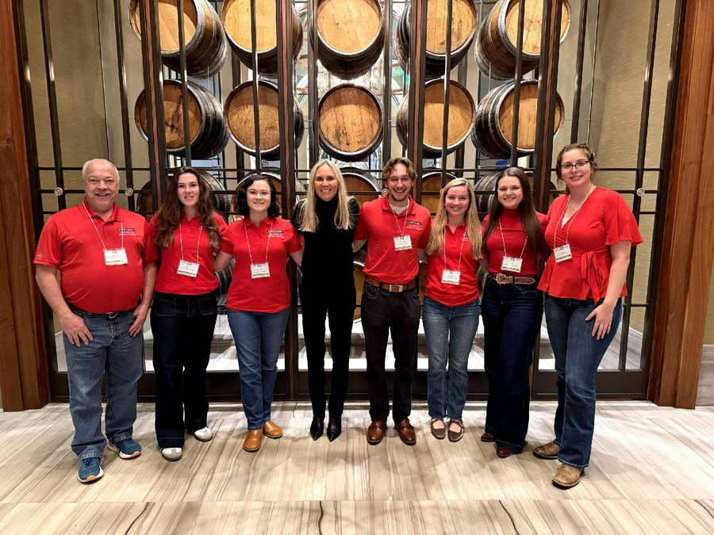
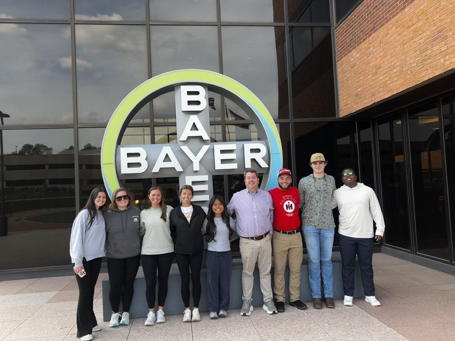
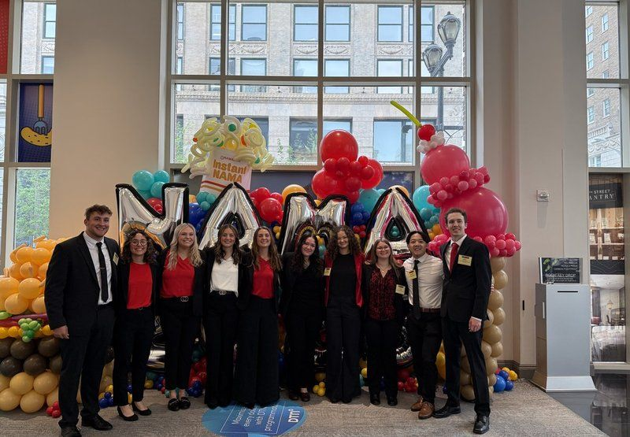
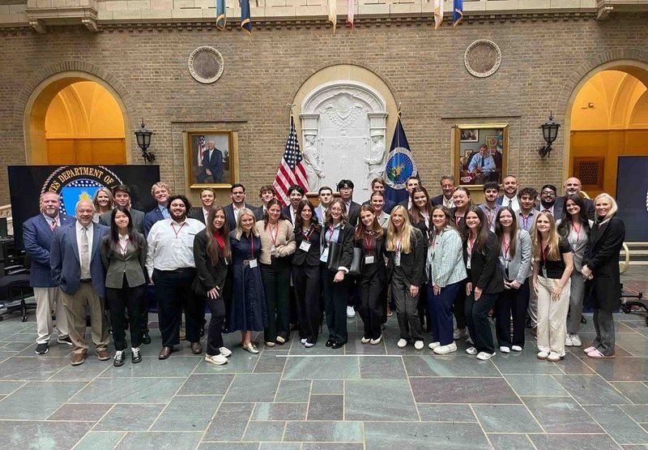
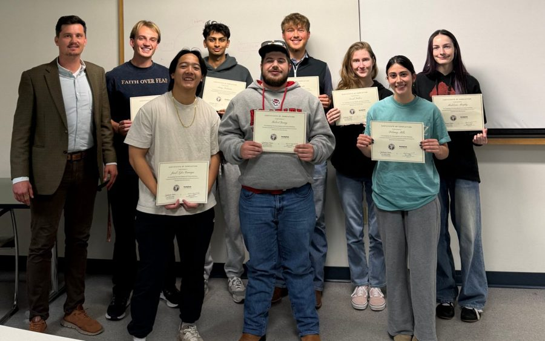
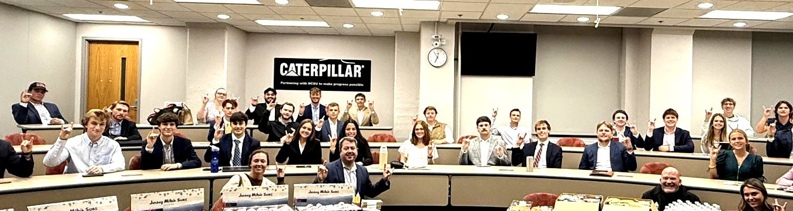
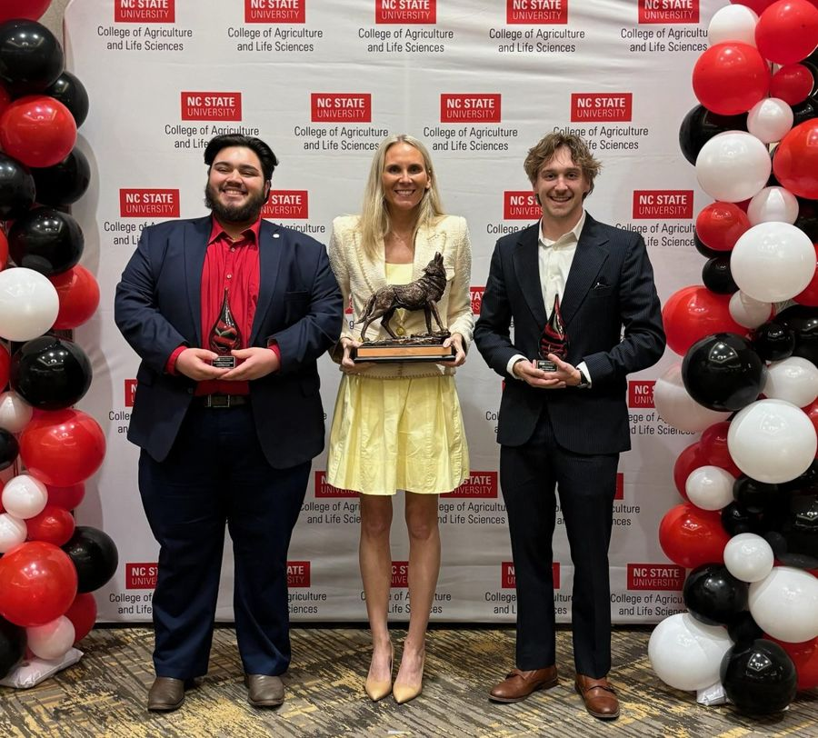
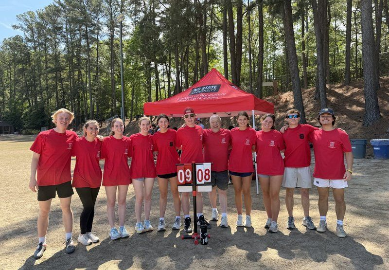
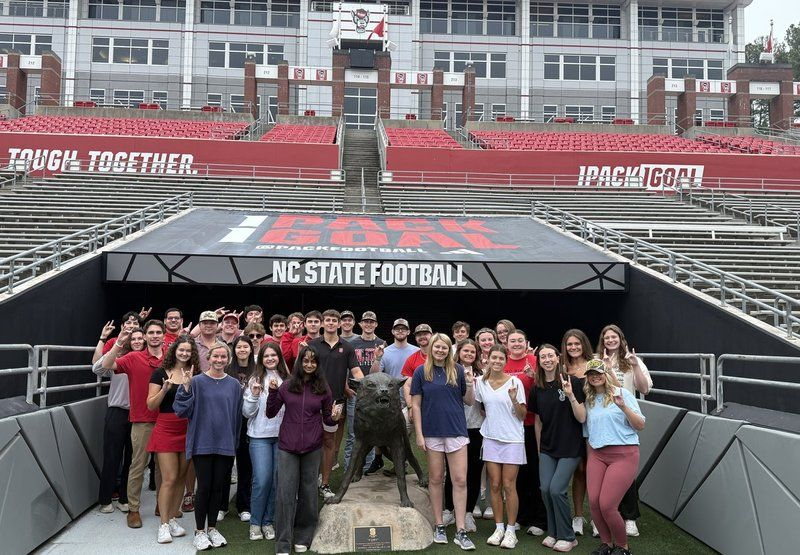

Compete High-Impact Experience
Spreadsheet Analytics Team
Build an Excel model for an ag business case you’ve never seen, against teams from across the country. First place at the 2026 AAEA national competition.
NC State · Agricultural Business Management
From family farms to Fortune 500 companies. ABM is a business degree built around the food and agriculture economy, and you don’t need a farm background to start.
Agricultural Business Management teaches economics, finance, marketing, management and data analysis, applied to the businesses that grow, process, finance and sell food and farm products. Graduates work in banking, sales, crop science, food processing, analytics, policy and their own businesses.
Salary: NC State CALS graduate outcomes data.
Learn from people running ag businesses such as Smithfield, Bayer, AgSouth and JCB, in workshops, internships and mentoring.
New students join a small cohort with a faculty advisor who stays with them through the program.
Planning tools we built, like Paw Plan, plus drop-in advising and peer-led help sessions.
The core covers economics, accounting, marketing, finance, law, policy and analytics. You’ll take one calculus course (MA 121) plus MA 114. After a few core economics courses, you choose electives that fit where you want to go.
Build the spreadsheet skills employers test for in interviews.
Work with real company data to answer business questions.
Learn how lenders and farm businesses make credit and investment decisions.
See how farm and food policy gets made, and who makes it.
Specialize your degree. Upper-level electives group into three paths. Pick one, or stack two.
Coming fall 2027: a five-year track to a Master of Agricultural Business Management. Take graduate credits as an undergraduate, count them toward both degrees, and finish the master’s in one more year.
Full degree requirements in the university catalog ›
NC State’s Provost designates High-Impact Experiences: structured, hands-on programs where students work on real problems, get feedback from mentors and reflect on what they learned. ABM offers seven of them, marked below.

Build an Excel model for an ag business case you’ve never seen, against teams from across the country. First place at the 2026 AAEA national competition.

A buzzer-style tournament on ag economics, policy and markets at the national AAEA meeting. Open to students in any year.

Role-play a real ag sales call in front of industry judges. Team trips to Bayer, John Deere and AGCO. Places every year.

Write a marketing plan for a real ag client and pitch it to industry judges at the National Agri-Marketing Association meeting.

Meet North Carolina’s members of Congress, Agriculture Committee staff, USDA and the industry groups that shape farm policy. Free to students.

A six-week certificate course taught by Matt Parker of Smithfield Foods’ grain procurement team: market fundamentals, hedging, procurement and negotiation, ending in a market simulation.

Taught by Aaron Messer of Bayer: how ag sales conversations happen, how to build a client pipeline and how to manage long sales cycles.
A fall course for students new to the major. It lays the professional foundation for the rest of the major: career planning, resumes and interviews, and connections with employers.
Do well in ARE 201, then apply or get nominated. UTAs lead small-group review sessions, sit with students in large classes and help faculty spot who is struggling. It’s one of the strongest references you can earn.

Ambassadors represent the major to prospective students and families and help new students get involved. ABM students also won two 2026 CALS awards, Change Maker and Outstanding Leadership, and one serves on the national AFA Student Advisory Team.
ABM is big enough to have something for everyone and small enough that faculty and staff know your name.

Soccer, basketball, volleyball, flag football and kickball. Rosters fill within hours, and no skill is required.

The ABM Club, Women in Agribusiness, MANRRS and your advising cohort, plus events all year.
Where students intern and work: Smithfield, JCB, John Deere, AgCarolina Farm Credit, BASF, Bayer, PepsiCo, SAS and many more.
01 · From high school
02 · From another college
03 · From another NC State major
Preference goes to students with a B- or better in ARE 304, ARE 321 or ARE 336 and an NC State GPA of 3.0 or better. AP and transfer credit count the same as NC State courses. Admission is competitive, and the strongest applicants have taken a preferred course and done well in it.
CODA answers on our advising pageNC State posts estimated yearly costs for tuition, fees, housing, food and books, for in-state and out-of-state students living on or off campus.
The ABM Drop is our student magazine. Read about internships, competitions, trips and the students behind them.
Read the latest issue All issuesTour campus through NC State Admissions, then come see Nelson Hall, home of the Department of Agricultural and Resource Economics.
Schedule a campus visit